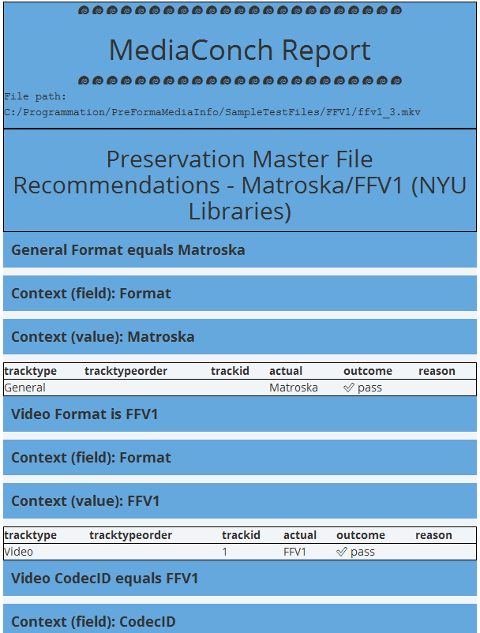
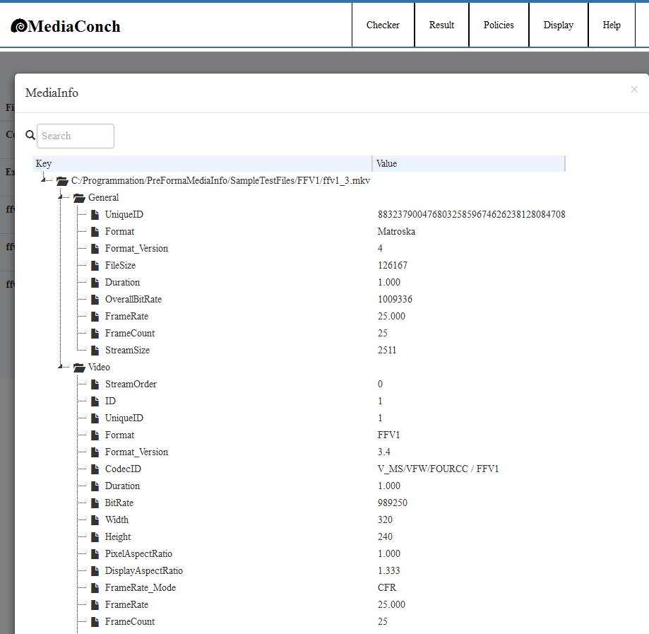
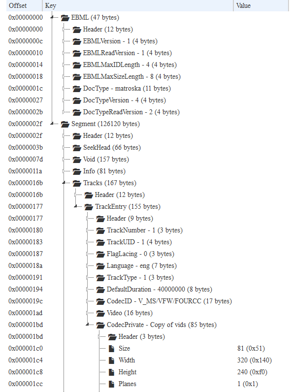
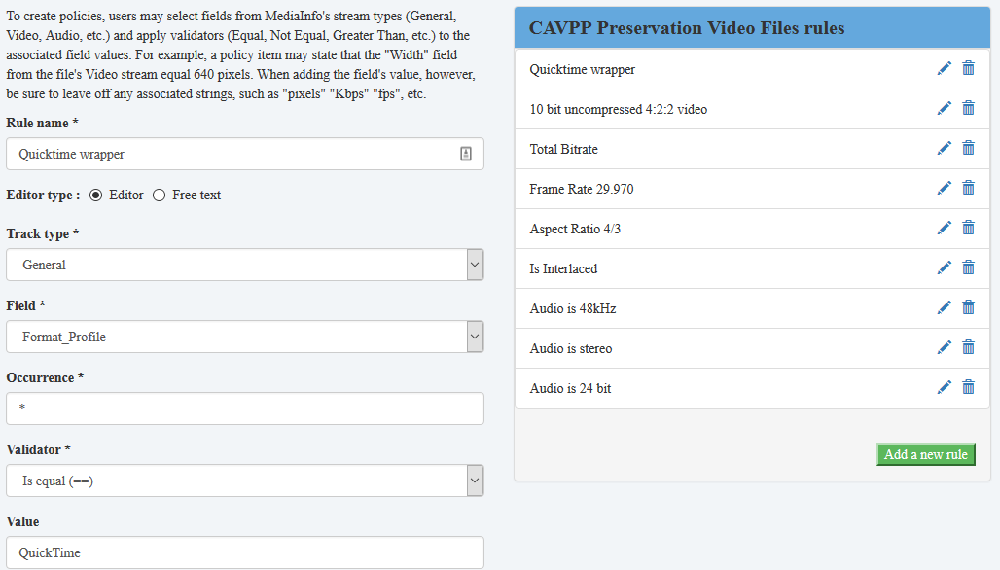
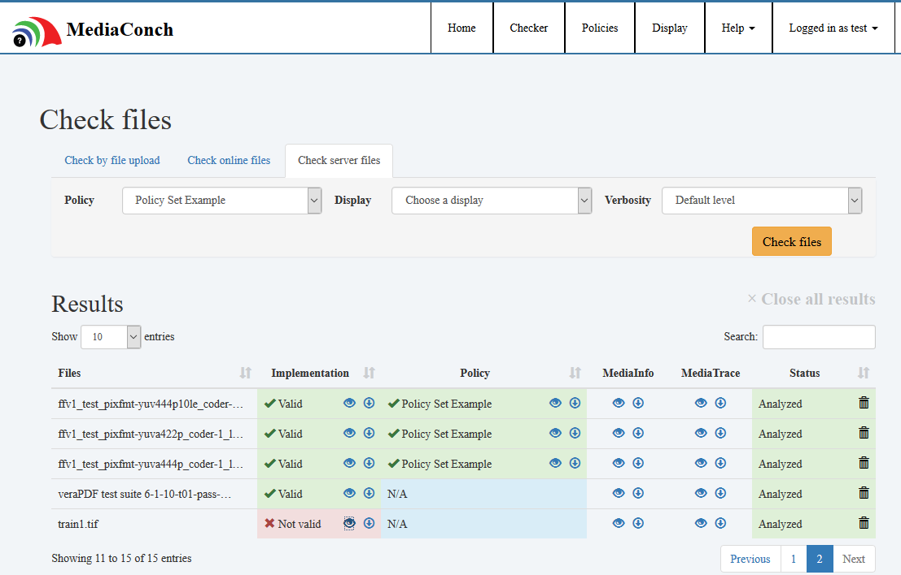
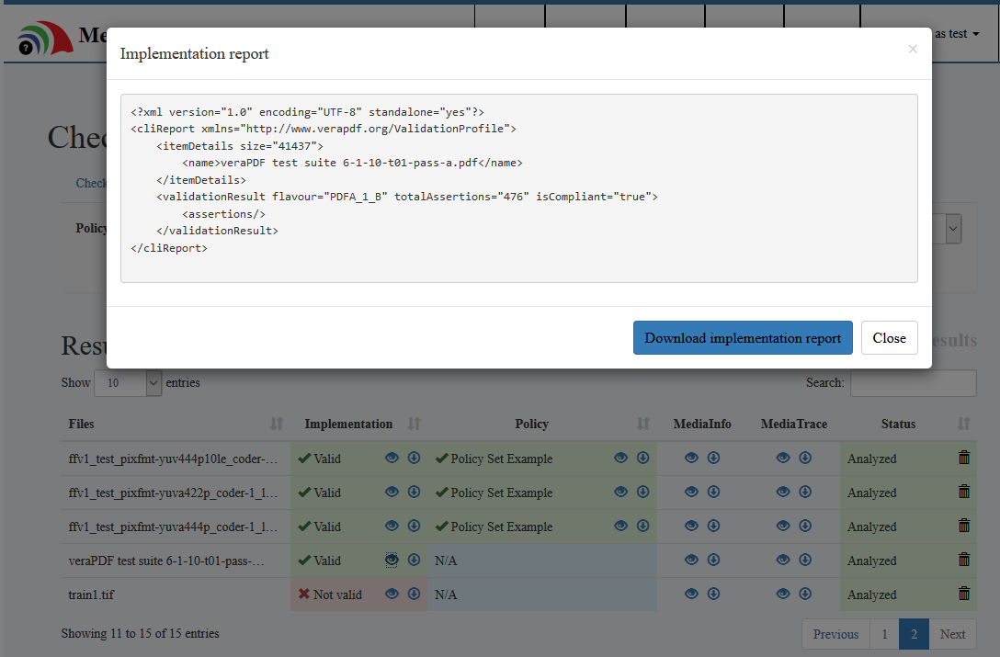
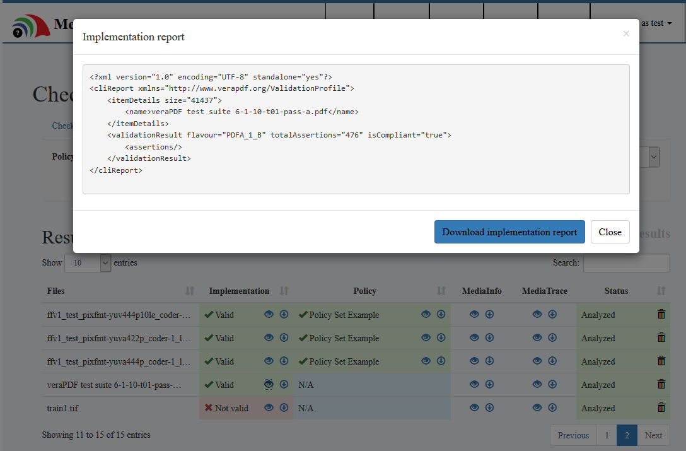
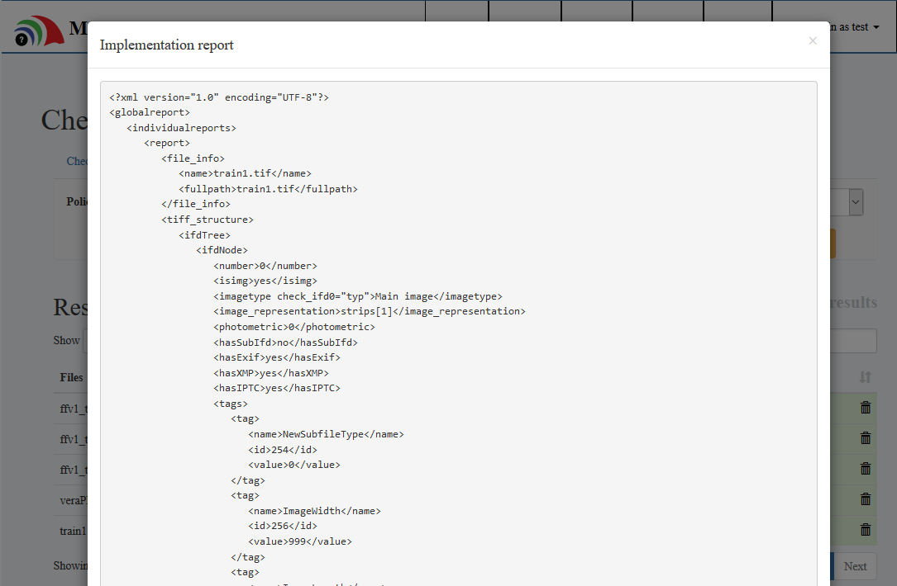
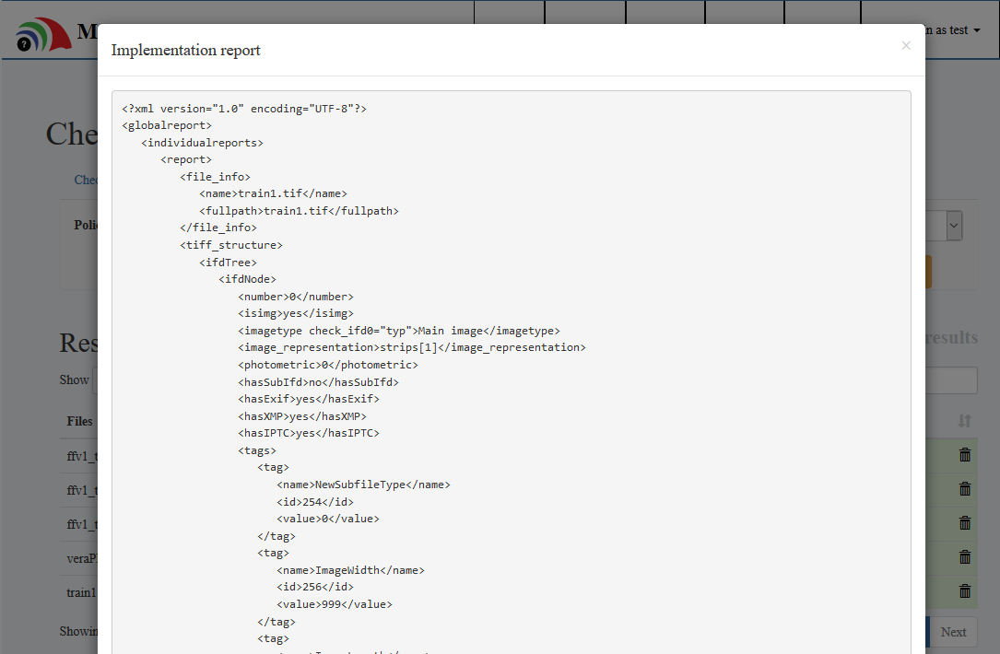

MediaConch
Implementation and policy checking
on FFV1, Matroska, LPCM, and more

Jérôme Martinez
MediaArea.net SARL
Open Source Preservation Workshop - April 2016


What is MediaConch?
A conformance checker
- Implementation checker
- Policy checker
- Reporter
- Fixer
What is MediaConch?
Implementation and Policy reporter

What is MediaConch?
Example of report

What is MediaConch?
General information about your files

What is MediaConch?
Inspect your files

What is MediaConch?
Policy editor

MediaConch interfaces
- Graphical interface
- Web interface
- Command line
- Server (REST API)
- (Work in progress) a library (.dll/.so/.dylib)
MediaConch and open source
- GPLv3+ and MPLv2+
- Relies on MediaInfo (metadata extraction tool)
- Use well-known open source libraries: Qt, sqlite, libevent, libxml2, libxslt, libexslt...
Supported formats
-
Priorities for the implementation checker
- Matroska
- FFV1
- PCM
-
But also...
- Can accept any format supported by MediaInfo for the policy checker
- MXF/JP2k
- QuickTime
- Audio files (WAV, BWF, AIFF...)
- ...
- Implementation checker for other formats can be developed in the future: we need you!
- Can accept any format supported by MediaInfo for the policy checker
Suported formats
-
Can be expanded
- By plugins
- Support of PDF checker: VeraPDF plugin
- Support of TIFF checker: DPF Manager plugin
- You use another checker? Let us know
- By internal development
- More tests on your preferred format is possible
- It depends on you!
- By plugins
Versatile
-
Several input formats are accepted
- FFV1 from MOV or AVI
- Matroska with other video formats
- (Work in progress) Extraction of a PDF or TIFF attachement from a Matroska container and analyze with a plugin (e.g. VeraPDF and DPF Manager)
- ...
Versatile
-
Input can be from:
- Files (local/network)
- FTP/FTPS/SFTP
- HTTP/HTTPS
- Amazon S3
Versatile
-
Binaries are provided for:
- Windows
Mac
- Homebrew users:
"brew install mediaconch", that's all!
- Homebrew users:
Linux (Ubuntu, Debian, Fedora, OpenSUSE...)
- Ubuntu 16.04 and Debian Testing/9 users:
"apt-get install mediaconch", that's all!
(it is in the official distros repository)
- Ubuntu 16.04 and Debian Testing/9 users:
- Embedded devices? Doable
(we tested it on a Raspberry Pi )
) - Can be ported on other distros (BSD...)
Standardization
- Matroska is widely used but not (yet) standardized
- FFV1 is gaining increasing usage in preservation contexts but is not (yet) standardized
CELLAR: IETF workgroup
- Open standards group
- Goal to standardize Matroska/FFV1/FLAC
- A lot of progress, especially with Matroska/EBML specs
- https://datatracker.ietf.org/wg/cellar/charter/
Worldwide
-
2 project leaders
- Jerôme Martinez (Digital Media Analysis Specialist, France)
- Dave Rice (Archivist, USA)
-
Presentations worldwide
- IASA, France
- FIAT/IFTA, Austria
- FOSDEM, Belgium
- AMIA, USA
- Code4Lib, USA
- JTS, Singapore
- (next) IPRES, Switzerland
- (next) IASA, USA
Matroska research corpus
- We analyze all Matroska files from archive.org
- Interface with some statistics of Matroska elements usage (e.g. files with CRC-32 elements...) https://mediaarea.net/MediaConchCorpus/
What's next?
Still under development but already usable
(PREFORMA prototyping phase up to end 2016)
- Better handling of huge libraries
- Better user interface
- Statistics
- Standardize Matroska and FFV1
- More conformance tests
- Integration in Archivematica
- Fixer
And after PREFORMA sponsorship?
It depends on you!
- This is open source
- Driven by user requests
- Everyone can develop or sponsor a development
-
Potential features
- Integration of test of your prefered format
(MXF? doable. JP2k? doable. WAV? doable...) - Integration of other checkers
(BWF MetaEdit? QCTools?) - Better integration in your workflow
- ...
- Integration of test of your prefered format
Example (Online)

Example (Command line)

Example (Plugins)

Example (Plugins)
 

Example (Plugins)
 

Stay in touch
MediaArea: https://mediaarea.net, @MediaArea_net
MediaConch: https://mediaarea.net/MediaConch, @MediaConch
Jérôme Martinez: jerome@mediaarea.net
Slides: https://mediaarea.net/Events
License: CC BY